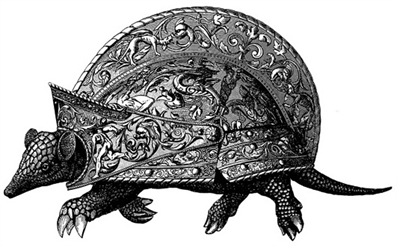

CONFORT
&
(in)
trans-gression
" Rien d’audacieux n’existe sans désobéissance aux règles. " Jean COCTEAU
La zone de confort est, par définition, un espace de sécurité intérieure. C’est un état psychologique où l’on ressent un bien-être certain et un contentement relativement affirmé, une osmose. C'est donc une zone d'aisance qui amène un état comportemental chez une personne qui choisit de vivre dans une position neutre d’anxiété, de contrainte et de stress. Autrement dit, ces derniers ingrédients sont réduits à leur niveau minimum, à l’instar du manque, de la vulnérabilité, du sentiment d’injustice et de la peur de l’inconnue. En outre, cette zone offre l’agréable sensation d’avoir la maîtrise de la situation, en ayant les ressources suffisantes pour y rester indéfiniment. Mais être rassuré fragilise ! Pour citer Tony Robbins, "toute croissance commence à la fin de notre zone de confort", nous éloignant de l'expectative et favorisant la configuration de nouvelles perspectives et conquiert les peurs. La zone de confort est le grand ennemi de la créativité, aller au-delà nécessite l’intuition ; c’est quand nous commençons à penser à réaliser nos rêves que nos rêves sont toujours en dehors de notre zone de confort. C’est toujours au-delà de ce que nous avons déjà fait. Alors, paradoxalement, notre zone de confort est notre zone d'instabilité voire d'insécurité.
Le franchissement non délibéré de celle-ci est souvent synonyme d’une perte de confiance en soi, et d’estime de soi. Nous sommes particulièrement sensibles et affectés par les opinions des autres. Nous nous donnons facilement des excuses pour rentrer dans notre carcan protecteur. Franchissement non délibéré car s'il y a un désir de sortir de cet espace, la curiosité, le défi et la projection vers de nouveaux horizons guidés par des idéaux prennent le dessus. Par ailleurs, sortir de sa zone de confort permet de stimuler sa créativité et donc d’envisager de nouvelles solutions aux problèmes et aux défis que la vie viendra nous soumettre, que nous soyons prêts à les gérer ou non. En introduisant de la nouveauté et de l’inattendu, on alimente son imagination, on élargit le champ des possibles, se matérialisant alors l'émergence de nouveaux points de vue.
Parfois, une intervention extérieure ou un événement indépendant de notre volonté (accident, problème de santé, rupture professionnelle ou relationnelle décidée par autrui…) provoque un choc ou un mouvement qui nous sort de notre district d'aisance. Nous sommes alors propulsés dans une zone de doute voire de peur, puis d’apprentissage. Bien souvent, nous n’en sortons pas volontairement, nous en sommes expulsés.
Sortir de la zone de confort peut relever d’une volonté personnelle. L’envie de lâcher une situation de routine ou d’endormissement, l’envie de relever un challenge. Rester dans une zone de confort risquerait de nous faire passer à côté de certains bienfaits de la vie, d’expériences ou d’apprentissages nouveaux. Quand nous restons dans cette zone de sécurité en raison d’une inertie bien ancrée, confortablement installés en nous croyant à l’abri de tout danger, nous ne voyons pas les événements extérieurs progresser. Dans ce cas là, se maintenir dans notre espace rigide peut relever du déni.
Et puis, cette extrusion est importante pour notre bien être en luttant contre la passivité hédonique, il faut régulièrement découvrir de nouvelles choses, développer ou approfondir des centres d’intérêt et des compétences. Cette adaptation hédonique correspond au fait que l’on finit toujours par revenir à un niveau neutre de bien être après un événement positif. Par ailleurs, le fait d’attiser sa curiosité et de stimuler son sentiment d’efficacité personnelle passe aussi par le fait de dépasser des difficultés ou des situations stressantes. Alterner intelligemment entre zone de confort et zone de croissance est donc une condition de l’épanouissement personnel.
Le franchissement non délibéré de celle-ci est souvent synonyme d’une perte de confiance en soi, et d’estime de soi. Nous sommes particulièrement sensibles et affectés par les opinions des autres. Nous nous donnons facilement des excuses pour rentrer dans notre carcan protecteur. Franchissement non délibéré car s'il y a un désir de sortir de cet espace, la curiosité, le défi et la projection vers de nouveaux horizons guidés par des idéaux prennent le dessus. Par ailleurs, sortir de sa zone de confort permet de stimuler sa créativité et donc d’envisager de nouvelles solutions aux problèmes et aux défis que la vie viendra nous soumettre, que nous soyons prêts à les gérer ou non. En introduisant de la nouveauté et de l’inattendu, on alimente son imagination, on élargit le champ des possibles, se matérialisant alors l'émergence de nouveaux points de vue.
Parfois, une intervention extérieure ou un événement indépendant de notre volonté (accident, problème de santé, rupture professionnelle ou relationnelle décidée par autrui…) provoque un choc ou un mouvement qui nous sort de notre district d'aisance. Nous sommes alors propulsés dans une zone de doute voire de peur, puis d’apprentissage. Bien souvent, nous n’en sortons pas volontairement, nous en sommes expulsés.
Sortir de la zone de confort peut relever d’une volonté personnelle. L’envie de lâcher une situation de routine ou d’endormissement, l’envie de relever un challenge. Rester dans une zone de confort risquerait de nous faire passer à côté de certains bienfaits de la vie, d’expériences ou d’apprentissages nouveaux. Quand nous restons dans cette zone de sécurité en raison d’une inertie bien ancrée, confortablement installés en nous croyant à l’abri de tout danger, nous ne voyons pas les événements extérieurs progresser. Dans ce cas là, se maintenir dans notre espace rigide peut relever du déni.
Et puis, cette extrusion est importante pour notre bien être en luttant contre la passivité hédonique, il faut régulièrement découvrir de nouvelles choses, développer ou approfondir des centres d’intérêt et des compétences. Cette adaptation hédonique correspond au fait que l’on finit toujours par revenir à un niveau neutre de bien être après un événement positif. Par ailleurs, le fait d’attiser sa curiosité et de stimuler son sentiment d’efficacité personnelle passe aussi par le fait de dépasser des difficultés ou des situations stressantes. Alterner intelligemment entre zone de confort et zone de croissance est donc une condition de l’épanouissement personnel.

Dès lors, l’objectif n’est pas forcément de revenir dans notre zone de confort comme l’escargot rentre dans sa coquille. Il est plutôt d’affronter au mieux la situation en traversant les zones de peur et d’apprentissage afin d’atteindre une zone de grandeur et d’épanouissement nouveau. Une nouvelle vie avec davantage d’apaisement s’ouvre à nous…
Sortir de cette espace cloisonné qu'est la zone de confort peut induire la notion de transgression qui est l’action de passer par-dessus un ordre, une obligation, une loi. En effet, Passer par-dessus évoque l’image d’une avancée, d’une action dynamique. Passer par-dessus un obstacle est tout différent que de renoncer ou de reculer, attitude inverse choisie par d’autres, passifs ou conformistes. Un ordre, une obligation, une loi nuancent le sens premier, souvent péjoratif, de la transgression. En effet, puisque la transgression concerne la loi ou la règle, on imagine habituellement une faute délibérée dans le chef du transgresseur.
L’ordre par contre nous ramène à plus de relativité. Être capable de désobéir à un ordre qu’on estime ne pas devoir exécuter peut, dans certaines conditions, être un acte nécessaire et hautement responsable. Chacun joue quotidiennement avec les règles, les normes, les limites. Une certaine dose de désobéissance est même nécessaire à la créativité et à l’innovation. Et la transgression nous concerne tous. Dépasser les limites fait partie de la nature humaine. Un instinct mû par la curiosité et un esprit aventureux sont parfois nécessaires au maintien du bien être. Si certaines transgressions sont extrêmes, choquantes, la plupart se perdent dans la banalité du quotidien, sans que nous en ayons conscience. A commencer par le mensonge, extrêmement répandu : "un individu normal ment en moyenne 2,5 fois par jour", affirme la psychologue sociale Claudine Biland.
Ainsi, pour grandir, il faut désobéir. Ces petits écarts de tous les jours ne sont pas anodins. Ils reflètent un mode de fonctionnement profondément ancré dans la psyché humaine. L’individu ne peut pas vivre sans transgresser. D’ailleurs, le jeune enfant ne peut pas grandir, ni apprendre à penser par lui-même, sans désobéir. Pour s’autonomiser, il doit dépasser les limites. Car s’il ne se confronte pas à des interdits à explorer ou à tester, son imaginaire ne se développera pas. Il risque de renoncer à se construire, ce qui serait très inquiétant. Le degré de transgression évolue tout au long de l’enfance et de l’adolescence, mais le mécanisme reste le même : l’être humain a besoin de jouer avec les règles pour se développer, explorer la vie, aller de l’avant.
Et l'origine biologique du respect des normes existe. La transgression est donc essentielle au développement de l’être humain. Certains scientifiques vont plus loin : le fait de désobéir ou d’obéir aux normes sociales aurait pour origine un mécanisme neurologique. Une équipe du département de l’économie de l’Université de Zurich a montré comment une zone du cerveau située à droite du cortex préfrontal, appelée rLPFC, était impliquée dans le respect des règles sociales.
Donc transgresser est une recherche de nouvelles limites, une restructuration constructive de sa zone de confort par expansion, audace et nouveauté.
Sortir de cette espace cloisonné qu'est la zone de confort peut induire la notion de transgression qui est l’action de passer par-dessus un ordre, une obligation, une loi. En effet, Passer par-dessus évoque l’image d’une avancée, d’une action dynamique. Passer par-dessus un obstacle est tout différent que de renoncer ou de reculer, attitude inverse choisie par d’autres, passifs ou conformistes. Un ordre, une obligation, une loi nuancent le sens premier, souvent péjoratif, de la transgression. En effet, puisque la transgression concerne la loi ou la règle, on imagine habituellement une faute délibérée dans le chef du transgresseur.
L’ordre par contre nous ramène à plus de relativité. Être capable de désobéir à un ordre qu’on estime ne pas devoir exécuter peut, dans certaines conditions, être un acte nécessaire et hautement responsable. Chacun joue quotidiennement avec les règles, les normes, les limites. Une certaine dose de désobéissance est même nécessaire à la créativité et à l’innovation. Et la transgression nous concerne tous. Dépasser les limites fait partie de la nature humaine. Un instinct mû par la curiosité et un esprit aventureux sont parfois nécessaires au maintien du bien être. Si certaines transgressions sont extrêmes, choquantes, la plupart se perdent dans la banalité du quotidien, sans que nous en ayons conscience. A commencer par le mensonge, extrêmement répandu : "un individu normal ment en moyenne 2,5 fois par jour", affirme la psychologue sociale Claudine Biland.
Ainsi, pour grandir, il faut désobéir. Ces petits écarts de tous les jours ne sont pas anodins. Ils reflètent un mode de fonctionnement profondément ancré dans la psyché humaine. L’individu ne peut pas vivre sans transgresser. D’ailleurs, le jeune enfant ne peut pas grandir, ni apprendre à penser par lui-même, sans désobéir. Pour s’autonomiser, il doit dépasser les limites. Car s’il ne se confronte pas à des interdits à explorer ou à tester, son imaginaire ne se développera pas. Il risque de renoncer à se construire, ce qui serait très inquiétant. Le degré de transgression évolue tout au long de l’enfance et de l’adolescence, mais le mécanisme reste le même : l’être humain a besoin de jouer avec les règles pour se développer, explorer la vie, aller de l’avant.
Et l'origine biologique du respect des normes existe. La transgression est donc essentielle au développement de l’être humain. Certains scientifiques vont plus loin : le fait de désobéir ou d’obéir aux normes sociales aurait pour origine un mécanisme neurologique. Une équipe du département de l’économie de l’Université de Zurich a montré comment une zone du cerveau située à droite du cortex préfrontal, appelée rLPFC, était impliquée dans le respect des règles sociales.
Donc transgresser est une recherche de nouvelles limites, une restructuration constructive de sa zone de confort par expansion, audace et nouveauté.
EN RELATION


ATARAXIE
(bonheur)
CREATIVITE
PEUR
(désIr)
FRUSTRATION
OSER
SOLITUDE
& CONFORMISME
CONFIANCE / ESTIME